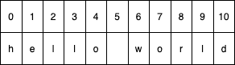
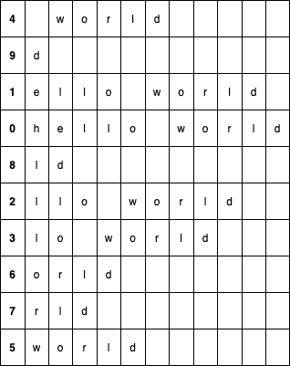
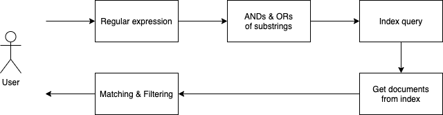
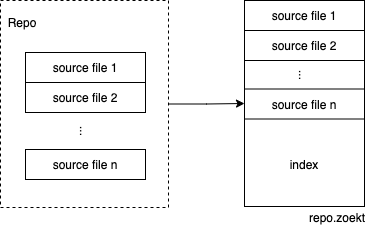
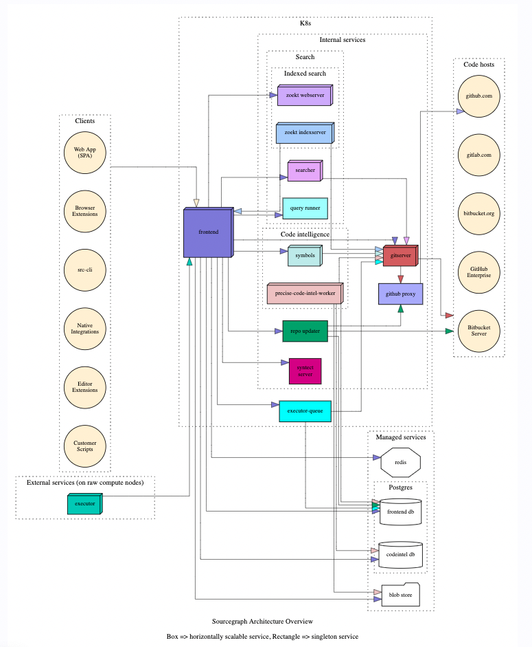

代码搜索引擎：基础篇
"Google 内部曾对工程师做一次 调研，发现平均每位工程师每天会进行 5.3 次代码搜索会话 (session)，执行 12 个代码搜索请求；在 Github/Gitlab 等仓库托管服务中，搜索是工程师最常用的功能之一。"
0. 引入
最近，我们遇到了两个场景：
- 负责基础服务的工程师想下线一个接口但不知道有哪些服务调用
- 负责 APM 系统的工程师想知道任意 RPC 接口的所有上游调用方
仔细分析不难发现，二者的本质都在于「维护微服务间的静态依赖关系」。等等！在调用链追踪系统中，我们不是已经获得了接口级别的依赖关系吗？为什么不能直接用那边的数据？目前伴鱼调用链追踪系统中维护的依赖关系在三个方面无法满足上述需求：
- 一些上古服务仍然在运行，但没有接入调用链追踪系统
- 调用链追踪系统中维护的是「动态依赖关系」，即最近 N 天 (由 retention policy 决定) 捕获的调用关系
- 调用链追踪系统中存储的是经采样策略过滤后的数据，可能存在漏采的情况
于是我们开始思考另一个方向：通过代码搜索引擎提取静态依赖关系。恰好在 2020 Q4 末，我们将内部所有项目仓库从 Gerrit 迁移到了 Gitlab，为代码搜索引擎的落地铺平了道路。
在下文中，我们将和大家分享代码搜索引擎的调研报告，期望能帮助读者了解代码搜索引擎如何工作。报告主要讨论以下话题：
- 为什么做
- 一般架构
- 设计决定
- 实现挑战
- 开源项目
1. 为什么做
Google 内部曾对工程师做一次 调研，发现平均每位工程师每天会进行 5.3 次代码搜索会话 (session)，执行 12 个代码搜索请求；在 Github/Gitlab 等仓库托管服务中，搜索是工程师最常用的功能之一；在「引入」中，我们也介绍了伴鱼搭建代码搜索引擎的初衷。那么在业界的实践中，代码搜索引擎主要被用来解决哪些问题呢？
常见的代码搜索场景包括：
- 理解代码间的依赖关系
- 寻找即将弃用 (deprecated) 接口的引用地点
- 避免重复造轮子
- 分享编码方案和编码风格
- 发现低质量的代码
- 定位安全问题
- ...
尽管服务和仓库不一定是一一映射关系，但如果服务被拆分，通常仓库也会被拆分；服务拆分后可观测性 (observability) 会下降，仓库被拆分后可观测性也会下降。在仓库拆分前，搜索代码只需要执行 grep 命令；仓库拆分后，工程师连公司内部存在哪些仓库都无法准确知道，更不用说 clone 到本地进行搜索。因此代码搜索引擎实际上是一种提高仓库可观测性的工具。
2. 一般架构

如上图所示，代码搜索引擎通常可以分为两个部分：Web Server 和 Index Serer。
Web Server 负责渲染查询页面，接收用户的查询请求，将查询调度到合适的 Index Server 中，获取查询结果，并返回到前端向用户展示。Index Server 负责从仓库托管服务中按给定的策略拉取相关仓库数据到本地并建立索引。当仓库数据更新时，需要同步仓库变动，更新索引，保证数据的最终一致性。当仓库数量过多，索引体积过大时，Index Server 需要支持横向扩展，分片管理数据；当请求数量过多时，Web Server 也需要支持横向扩展。
实践中，有的项目会将 Web Server 和 Index Server 合而为一，有的会将 Index Server 的仓库同步和索引建立进一步拆分成两个模块，甚至将仓库和索引的元数据用关系型数据库单独管理，但这一切都能够以「一般框架」为起点设计。
3. 设计决定
了解了代码搜索引擎的一般架构后，我们从以下四个角度出发，讨论该系统各个模块的设计决定：
- 查询语言
- 索引结构
- 数据管理
- 结果排序
3.1 查询语言

如上图所示，代码搜索引擎的查询语言通常由两部分构成：「修饰词」和「匹配器」。「修饰词」用来指定查询的范围，如仓库名称、文件名称、编程语言等等。它既用于帮助用户更精确地描述查询内容，也能够为搜索引擎更高效地执行提供线索。「匹配器」则是对目标代码特征的表述，它可以是关键词 (keyword)、子串 (substring)、正则表达式 (regular expression)，也可以是包含编程语言特征的结构化 (structural) 描述。
举例如下：语句
1 | r:kubernetes b:master common.*Describe |
表示的是：搜索 kubernetes 仓库 master 分支中，匹配正则表达式 common.*Describe 的源码。再看看「匹配器」，假设有一个文档 (document) 内容如下：
1 | func greeting() { |
通过关键词匹配，你可以搜索单词，如 "greeting"，或词组，如 "hello world"，搜索到该文档，但无法通过搜索子串，如 "greet" 或 "Print" 达到目的；通过子串匹配，你可以搜索任意子串，如 "greet"、"Print"，当然跨越单词的子串也没问题，如 "ello wor"；通过正则表达式，你的描述可以更加灵活，如所有包含 ctx 参数的函数可以搜索 "^func.*ctx"。关键词、子串、正则表达式的表达力依次递增，但三者都属于纯文本匹配器。如果想基于编程语言的语法结构来搜索，那么就需要结构化匹配器。例如在 Sourcegraph 中，你可以通过以下匹配器：
1 | switch :[[v]] := :[x].(type) {:[_] case nil: :[_]} |
来匹配 Go 源码中 type switch 代码块中包含 nil case 的情况。
3.2 索引结构
代码搜索引擎之于通用文本搜索引擎，就如时序数据库之于关系型数据库，前者是后者的一个特例。因此驱动代码搜索引擎的许多索引结构源于通用文本搜索引擎。

如上图所示，我们大致可以将代码搜索引擎常用的索引结构分为两类：「基于文本」 (text-based) 和「语言感知」 (language-aware)。基于文本的索引结构只对语料做纯文本分析，而语言感知的索引结构需要理解编程语言的语法结构，前者适用于所有文本搜索引擎，后者则为代码搜索引擎特有。
本节我们首先回顾一下「倒排索引」的基础知识，随后依次讨论上图叶子节点中的索引结构。
3.2.1 倒排索引
文本搜索的实现离不开一个经典的数据结构 — 倒排索引 (Inverted Index)。本节简单回顾倒排索引的基本结构以及它的一些基本变体。如果你对这个话题有兴趣深入了解，我推荐弗莱堡大学的 Information Retrieval 课程 (视频 | 资料)。
给定如下一组文档 (documents)：
- He likes to wink, he likes to drink.
- He likes to drink, and drink, and drink.
- The thing he likes to drink is ink.
- He likes to wink and drink pink ink.
其中序号即为文档编号。最简单的倒排索引就是先对其分词，找出每个单词对应的文档列表：
1 | { |
在相关书籍中，这个数据结构被称为 Posting Lists 或 Postings。为了算法实现上的高效，每个单词对应的文档序号列表通常按顺序排列。
有了上述结构，我们就能支持简单的「关键词搜索」(Keyword Search) 功能。假如用户想查询包含单词 "wink" 的文档，就找到单词 "wink" 对应的文档列表即可。上述结构也能支持「词组搜索」 (Phrase Search)，比如 "likes to"，就可以分别找到 "likes" 和 "to" 对应的文档列表，取二者交集。但对于这些筛选出来的文档，我们还需要再进行一遍确认，因为 "likes" 和 "to" 出现的位置和顺序都无法保证符合要求，比如文档 "To my mind, I likes the way you achieve this"。
另一种支持的「词组搜索」 的方法是在 Postings 中加入每个词语出现的位置信息，如：
1 | { |
通常称这种 Postings 为 Positional Postings。这时支持「词组搜索」就是小菜一碟了，典型的空间换时间。
如果用户记不住完整的单词和词组，怎么办？这就需要支持一种新的搜索方式 —「子串搜索」(Substring Search)，如搜索 "ink"，要给出 "drink"、"wink" 和 "ink" 的结果并集。显然，每次遍历 Postings 中的所有 key 效率不高，尤其是需要做多语言支持的时候，那么一个常用的技巧就是 q-gram (或 n-gram)。gram 就是若干连续字符的集合，而前面的 q 或 n 表示的是连续的字符个数，2-gram 就是字符的两两组合，3-gram (trigram) 就是三个字符的任意组合，依次类推。比如字符串 "freiburg" 包含的所有 3-gram 包括：
1 | $$f, $fr, fre, rei, eib, ibu, bur, urg, rg$, g$$ |
而 q-gram index 就是把前面的 Postings 中的词语换成这些 q-gram。那么查询子串 "reibur" 就可以转化为查询rei AND eib AND ibu AND bur。
💡 留个思考：如果想支持模糊检索该怎么做呢？
以上是对倒排索引的简单回顾，接下来我们来讨论代码搜索引擎常用的索引结构。
3.2.2 Trigram
Russ Cox 在博客 How Google Code Search Worked 中提出用 Trigram 索引来支持代码搜索，其结构与 3.2.1 节中介绍的 3-gram 完全一致，这里不再赘述。
❓为什么是 3-gram，而不是 2-gram 或 4-gram
In practice, there are too few distinct 2-grams and too many distinct 4-grams, so 3-grams (trigrams) it is. — Russ Cox
3.2.3 Positional Trigram
Positional Trigram 与 Trigram 间的关系就是 Positional Postings 与 Postings 间的关系，基本结构如下：
1 | { |
即在 Trigram Index 的基础上增加位置信息。
3.2.4 Suffix Array
一个字符串的 Suffix Array 是它所有后缀子串按字典序排列的数组。假设给定一个字符串 "hello world"：

它的所有后缀子串包含："hello world"、"ello world"、"llo world" 等等，排序后得到：

其中第一列表示后缀子串在原字符串中的位置。拿到上述排序结构后，查询子串就可以转化成二分查找问题：以查询子串 "llo" 为例，先在上图中的第二列，即所有后缀子串的第一个字母，以字符 "l" 为目标执行二分查找，找到一块区域 (5-7 行)，然后对这个区域继续嵌套执行二分查找，直到遍历完目标子串的所有字符为止。
💡留两个思考：
- 如何高效地存储 Suffix Array 索引？需要存储所有子串吗？(答案在 Nelson Elhage 的博客里)
- Suffix Array 索引建立的时空复杂度是多少？
3.2.5 基于文本索引的查询过程
无论是 Trigram、Positional Trigram 还是 Suffix Array，如果想支持通过正则表达式搜索代码，都要实现以下流程：

- 将正则表达式转化成子串的「与」、「或」组合
- 将子串的组合查询转化成对应的索引查询 (Trigram, Positional Trigram, Suffix Array)
- 执行索引查询，获取候选文档列表
- 对每个候选文档执行实际的正则表达式，将匹配成功的结果返回
由于第 1 步和第 2 步可能不是等价转换，因此需要通过第 4 步得到精确的查询结果。这里问题的难点在于：如何将正则表达式转化成子串的「与」、「或」组合。
举一些简单的例子：
/Google.*Search/→Google AND Search(Path|PathFragment).*=.*/usr/local→("Path" OR "PathFragment") AND "/usr/local"
需要关注的是，第 1、2 步的选择性越大，第 4 步的成本就越小，因此转化方案的好坏取决于其转化效率和结果查询的选择性。对这个话题感兴趣，可以深入了解业界的解决方案：
3.2.6 Ctags
Ctags 是 unix 或 unix-like 系统中内置的工具，为源码仓库生成「语言对象」 (language objects) 的索引。目前仍在维护的版本是 Universal Ctags，想了解更多细节可以阅读它的官方文档。
以我的一个玩具项目「Zhenghe-MD/regexgo」为例，执行：
1 | $ git clone https://github.com/ZhengHe-MD/regexgo.git |
就能在 regexgo 文件夹中看到一个 tags 文件，其内容如下所示：
1 | MatchString nfa.go /^func MatchString(n *nfa, word string, options *Mat/ |
每行数据是一个 (language object, file, regexp matcher) 三元组。Ctags 常常被用于 IDE 实现定义跳转的功能，它也可以被集成到代码搜索引擎中，更好地服务于「语言感知」的查询。Ctags 背后由不同编程语言的解析器 (parser) 驱动，后者的原理则是另一个话题，不在本文中讨论。
3.2.7 LSIF
从 Ctags 的例子中可以看出，Ctags 中记录的「语言对象」信息量很小，基本上只有函数信息。要支持表达力更强的「语言感知」查询，其记录的信息还远远不够。在数据模型和信息量上，LSIF 比 Ctags 走得更远：
The goal of the LSIF is to support rich code navigation in development tools or Web UI without needing a local copy of the source code. — LSP/LSIF docs
由于 LSIF 的设计目的是支持丰富的代码跳转能力，因此它需要记录包括变量定义、引用，函数的定义、调用及它们之间的关系。LSIF 是将这些实体，及实体之间的关系用图结构来建模。以下是 Chris Wendt 在 GopherCon 2019 上题为「LSIF + Go」演讲中的其中一张 slide，其中红框为图的点，绿线为图的边。

将这张图记录到索引中，就可以在必要的时候按「图」索骥，支持丰富的「语言感知」查询。以下是 LSIF 的索引文件数据示例：
1 | //... |
3.3 数据管理
代码搜索引擎需要管理两组数据：仓库和索引。根据使用场景需要，引擎可以将它们存储在 HDD 或 SSD 上，并在服务的时候载入必要的部分到内存中。因为数据模型比较简单，代码搜索引擎会直接使用文件系统存储仓库和索引。
3.3.1 数据分片
就如早期的 Slack 可以基于 workspace_id 隔离计算、存储资源，支持系统横向扩展，代码搜索引擎中也存在这样一个东西，它就是 repo_id。它既可以帮助查询引擎缩小搜寻范围，也可以帮助存储引擎管理仓库和索引数据。
3.3.2 仓库
仓库通常被托管在云服务中，如 Github、Gitlab、BitBucket 等等，因此代码搜索引擎的核心工作之一就是从托管服务中同步仓库。这里有两个小的设计决定：同步内容和同步时机。
同步内容
以 Git 为例，你可以选择 clone、shallow clone 或 bare clone。git clone 会拉取仓库的所有历史并 checkout 到默认分支 (main/master) 最新的 commit 上；git clone --depth=k 会拉取仓库最新的 k 个 commit 数据，丢弃之前的历史；git clone --bare 只拉取仓库的 .git 文件夹。三者的区别体现在拉取数据的大小和保留的仓库历史信息上。
同步时机
如果代码搜索引擎需要为之建索引的仓库数量不多，可以简单的按用户对实时性的要求定期全量拉取，如 1 小时、1 天等等；如果需要索引整个 Github 上的大部分，甚至所有开源项目，就需要结合事件回调、动态调整更新频率等复杂策略控制各个项目的同步时机。必要的时候还需引入关系型数据库存储相关元数据。
3.3.3 索引
大多数代码搜索引擎的数据管理模块会以一个索引文件对应一个仓库，这与上文提到的数据分片策略相关。有些引擎会选择在索引文件中冗余一份源码，使得查询过程可以完全在索引文件中完成，同时可以将仓库与索引的管理解耦。其中一个实现上常见的技巧是将每个仓库的所有源文件按某个固定顺序连接 (concatenate) 起来，然后再对整个大文件建立索引：

在绝大多数时候，研发关心的是仓库的最新版本，因此一个务实主义的做法是只对最新的版本建立索引。
Indexing every branch of every repository isn’t a pragmatic use of resources for most customers, so this decision balances optimizing the common case (searching all default branches) with space savings (not indexing everything). — Sourcegraph
仓库发生变化后，数据管理模块需要将这些变化反馈到索引上。
3.4 结果排序
对于像 Google 这样的搜索引擎，排序是非常重要的一环，把用户最想获取的信息按质量从高到低排序就是它的设计目的之一。实际上排序质量的衡量背后有一系列的理论研究在支撑。然而，目前绝大多数开源代码搜索引擎并不太关心排序，个人认为其原因可能在于：
- 开发者通常能非常精准地在查询语句中描述自己想要的代码，甚至做到 100% 的 precision 和 recall
- 代码搜索引擎搜索范围通常为一个公司或部门内部的所有仓库，数量不多，结果列表不会很长
一些云端仓库托管服务也提供搜索服务，从其用户使用的角度考虑，支持基于流行度、活跃度、话题的排序就变得相当必要。
4. 实现挑战
本节介绍搭建一个代码搜索引擎可能会遇到的问题。这个列表会随着日后的调研和实践继续增补内容。
4.1 Unicode
Zoekt 项目的作者，Google 工程师 Han-Wen 在 Gerrit Summit 2017 上的 分享 中曾经介绍过，在他开发第一版 Zoekt 时，只考虑了源码中的 ascii 字符，当他期望扩大项目适用范围，支持 unicode 时，发现自己以前有很多逻辑不再适用。因为 unicode 的每个字符的长度不定，一些基于字符串字节长度的计算不再成立。如果你的代码搜索引擎是面向各种语言的，在写代码时需要对此格外留意。
4.2 安全问题
对于一个组织内部的代码搜索引擎来说，最大的风险就是代码中的敏感信息泄露。开发者可能会无意地将一些 token、秘钥、邮箱、手机号等等信息放到源码中。尽管这样的风险本来也存在，但代码搜索引擎的存在放大了泄漏风险。
4.3 分页
假如一个搜索请求命中的文档很多，出于性能和体验考虑，用户在前端更希望支持分页。代码搜索引擎支持分页比在关系型数据库中支持分页要难一些，因为你永远无法知道一个临时的查询会在一个仓库匹配多少次，你也无法为此提前建立精确的索引。如果对此感兴趣，可以看看 Sourcegraph 如何解决这个问题。
5. 开源项目
本节介绍的项目在时间线上排列如下：
其中 Google Code Search 算是这个领域的开山之作，后续的项目都是 「inspired by Russ Cox's work」😆。
5.1 Google Code Search
⚠️ 本节的大部分内容来自于 Russ Cox 的博客 How Google Code Search Worked。
5.1.1 一点历史
如果这个世界要求必须有一些工程师来研究代码搜索工具，那么十有八九这些工程师来自 Google。2006 年夏天，Russ Cox 来到 Google 实习。当时，Google 内部有一个叫作「gsearch」的项目用于代码搜索，它的实现可以简单地理解成分布式 grep，即启动多台机器存储不同的仓库集合，每次查询时将 grep 命令下发到各个机器，每个机器在本地执行 grep 后返回，并将结果汇总。
Russ Cox 的 mentor，Jeff Dean 在他开始实习时说：「如果能做一个支持搜索全世界开源代码的工具，是不是很酷？」在当年 10 月，这个项目 Google Code Search 终于上线。
5.1.2 查询语言
Google Code Search 支持通过正则表达式搜索，Russ Cox 描述这种查询方式为「geekily great but a very small niche」。Russ Cox 开源的核心代码并没有支持通过「修饰词」来缩短检索范围，而只是提供了类似 grep 的命令行工具。这大概是因为开源出来的代码足以展示一个代码搜索引擎的运行逻辑，剩下的就让有兴趣的开发者自行扩展。
这里有一个值得一提的小插曲，Russ Cox 在项目的概念验证阶段中发现大部分手头的正则表达式引擎都不能保证线性时空复杂度，因为它们使用的是回溯法 (backtracking) 而非有限自动机 (finite automata)。尽管 Google Code Search 使用的正则表达式引擎仍然是 Plan 9 grep 中的实现，若干年后，这个引擎终于被替换成了 RE2。当然，如何实现一个正则表达式是另一个有趣的话题，但不在本文的讨论范围内，有兴趣可以先读一下 Russ Cox 的 正则表达式系列博客。
5.1.3 索引
Google Code Search 使用的是最基本的 Trigram Index。索引本身并无复杂之处，实际花费 Russ Cox 大量精力的是「从正则表达式到 Trigram 查询」的转化上。
5.1.4 运行
上文介绍过，在 Google Code Search 中 Russ Cox 只提供了本地的可执行命令，供开发者试验。项目提供的可执行命令包括 cindex、csearch 和 cgrep。
cindex 会对所有输入的源码文件，建立一个单独的索引文件，默认存储在 $HOME/.csearchindex 中。比如：
1 | $ cindex $HOME/src /usr/include |
会为 $HOME/src 和 /usr/include 文件夹下的所有源码文件建立索引。如果重复执行该命令，会自动增量更新发生变化的部分，多次操作效果幂等。csearch 可以支持用正则表达式在 cindex 已经建立好的索引上检索代码。cgrep 则是提供 grep 类似交互风格的 csearch。
5.1.5 小结
总结一下， Google Code Search 项目并不关注仓库同步与索引维护的自动化。开发者如果想将它服务化，需要自己构建相应的逻辑。遗憾的是，我并没有在网上找到关于 Google 将其服务化、规模化的细节。
5.2 Hound
两位在 Etsy 工作的工程师，Kelly Norton 和 Jonathan Klein，基于 Google Code Search 搭建了 Hound 来解决他们在公司内部遇到的代码搜索需求。
We've used many similar tools in the past, and most of them are either too slow, too hard to configure, or require too much software to be installed. Which brings us to... — Hound README.md
Hound 项目就是 Google Code Search 项目的服务化，它甚至很实在地在源码中直接搬运了 google/codesearch 的仓库，并在原作的基础上增加了仓库同步、索引维护、 HTTP 服务等模块。
Hound 在启动时需要读取一个配置文件，描述数据存放的根目录，以及需要搜索哪些仓库。一个配置文件的示例如下：
1 | { |
因此如果你希望它能够自动发现新的符合要求的仓库，则需要额外提供「仓库发现」逻辑。
5.2.1 存储
Hound 的所有数据存放在配置文件中制定的 dbpath 目录下。该目录下存放两种文件夹：
- 仓库文件夹：
vcs-${Repo.Url} - 索引文件夹：
idx-${random_hash}
每个仓库中存放着 git clone 下来的数据；索引文件夹的布局如下：
1 | idx-10837b48f746028d |
其中 tri 文件就是 Google Code Search 中 cindex 生成的索引文件，而 raw 文件夹下冗余了一份仓库中所有被建立索引的源码文件。
5.2.2 服务化
Hound 的启动流程如下图所示：

Hound 只有一个进程，启动后它会先触发首次同步，同时构建索引。不论成功或失败，一旦所有仓库都被访问一次后，就通过 HTTP 服务开放搜索 API，之后每隔 30 秒， Hound 就会启动一次数据的全量更新。对于少量仓库的场景，这个策略运行得很完美。
5.3 Livegrep
Livegrep 项目的 README 这么介绍自己：
Livegrep is a tool, partially inspired by Google Code Search, for interactive regex search of ~gigabyte-scale source repositories.
可以看出，其设计目的是为了在超大型项目上实现实时搜索，而非我们所面临的「微仓库」场景。
5.3.1 查询语言
Livegrep 支持「修饰器」+「匹配器」构成的查询语句，其中「匹配器」兼容 RE2 的正则表达式语法。其搜索主页提供了一些说明：

5.3.2 索引
Livegrep 使用 Suffix Array 给仓库建立索引，它的作者 Nelson Elhage 在博客 Regular Expression Search with Suffix Arrays 中曾提到，在实践中 Livegrep 需要使用原仓库语料 (corpus) 3-5 倍的空间建立索引，是典型的空间换时间策略。这也说明获得它提供的 极致搜索体验 需要付出代价。
5.3.3 存储
Livegrep 为一个仓库建立一个索引文件，构建完毕后可以抛开仓库独立运行。根据能够获取到的信息， Livegrep 主要关注单个仓库搜索，为了速度，它会默认将整个索引文件加载进内存，如果内存放不下可以使用 mmap 选项。由于索引体积较大，同时在成百上千个仓库中搜索并非 Livegrep 所擅长的事情。
5.3.4 服务化
Livegrep 的架构与代码搜索引擎的一般架构基本一致，一个进程用于拉取代码、建立索引、提供查询 API，一个进程提供搜索页面和 API 服务。据其文档所述，要支持仓库的变更同步，需要启动额外的进程，如「livegrep-github-reindex」。
5.4 Zoekt
⚠️ 本节大部分内容来自于 Zoekt 项目的设计文档。
Google 的工程师 Han-Wen 在 2016 年首次发布了 Zoekt 项目，并在 Gerrit Summit 2016 的演讲「Zoekt - Codesearch for Git」中介绍了这个项目。在接下去的一年中，他继续优化 Zoekt 项目，并在 Gerrit Summit 2017 的演讲 「Zoekt, improved - Codesearch, one year later」中介绍了他解决的问题和改进的功能。
5.4.1 查询语句
Zoekt 支持「修饰器」+「匹配器」构成的查询语句，其搜索主页提供了许多查询示例和说明，以下是截图：

5.4.2 索引和存储
Zoekt 将每个仓库的所有源码文件连接成一个大文件，并基于它构建 Positional Trigram 索引，并将索引数据用 gob 编码后直接附加在大文件后面：

这个文件的后缀名为 ${repo}.zoekt。由于 .zoekt 文件同时包含代码和索引，只要没有新的代码更新，Zoekt 可以只靠索引文件来提供搜索服务。
除此之外，Zoekt 还支持通过引入 ctags 优化查询结构的排序。
5.4.3 服务化
Zoekt 部署包含两个模块：zoekt-indexserver 和 zoekt-webserver。它的架构与代码搜索引擎的一般架构基本一致。zoekt-indexserver 负责代码同步和索引维护，它原生继承了许多代码托管服务，如 Github、Gitlab、Bitbucket、Gerrit 和 Gitiles，同时还支持配置仓库过滤器，通过仓库名称等特征来选择支持的搜索范围，解决了仓库发现的问题，这方面比 Hound 要友好很多。默认配置下，zoekt-indexserver 每天拉取一次仓库数据，重建索引。zoekt-webserver 则负责提供 HTTP 服务和搜索页面。
5.5 Sourcegraph
实际上 Sourcegraph 是一家公司的名字，同时也是它们的核心代码搜索产品的名称。基于其大规模代码检索能力，Sourcegraph 还发布了多个产品：
- Code Search：提供海量仓库搜索功能
- Code Intelligence：提供跨仓库的类似 IDE 的丰富的云上代码访问、跳转功能
- Batch Changes：跨仓库批量修改代码，推送 PR/MR 并跟踪合并结果
本节我们主要关注它的 Code Search 产品，下文中如无特殊说明，我们用 Sourcegraph 指代其 Code Search 产品。
5.5.1 查询语言
Sourcegraph 支持「设计决定」一节中提到的所有查询语言，也是当前唯一支持结构化查询的代码搜索引擎。想了解它支持的完整语法和使用示例，可以翻阅它的官方文档。如果你对 Sourcegraph 如何支持结构化查询有个大致了解，可以看看它们的设计文档 RFC 40，同时也许你会对 comby 感兴趣。
5.5.2 索引
Sourcegraph 实际利用 Zoekt 驱动，因此它使用的自然也是 Positional Trigram 索引。值得一提的是，Sourcegraph 公司的 Code Intelligence 产品还有一个 Precise Code Intelligence 版本，是由 LSIF 索引驱动。
5.5.3 存储
Sourcegraph 在隔离代码和索引上更近了一步。在它的架构中存在一个支持横向扩展的 gitserver 服务，负责从不同的代码托管服务中拉取数据。而由 zoekt-indexserver 负责对 gitserver 中的仓库构建 Positional Trigram 索引。更准确地说，还有一个叫做 repo-updater 的组件负责 gitserver 数据拉取任务的调度，后者将元数据存储在 Postgres 中，同时向 gitserver 发送相关命令。
由于 Sourcegraph 需要支持为海量仓库建立索引，它还基于仓库活跃度制定了数据同步的退避 (backoff) 策略。举例如下：如果一个仓库的最后一个 commit 在 8 小时以前，下一次数据同步就会在 4 小时 (8 小时的 1/2) 后调度，如果届时仍然没有数据变动，则再下一次数据同步任务将在 6 小时候被调度。
5.5.4 服务化
⚠️ 本节内容来自于官方文档 Sourcegraph architecture overview。
以下是 Sourcegraph 的架构全图：

代码同步由 gitserver 和 repo-updater 完成，详情可查看 Life of a repository；基于文本的代码搜索由 Zoekt 项目支持，包括 zoekt-indexserver 和 zoekt-webserver。在未建立索引的分支上的查询由 searcher 完成。syntect-server 负责往搜索结果中添加语法高亮信息，详情可查看 Life of a search query；precise-code-intel-worker 则负责前面提到的 Precise Code Intelligence。
作为一个商业化的代码搜索引擎项目，Sourcegraph 无论在系统设计上还是产品体验上都更加完善。如果你期望享受极致的使用体验，且不想花费时间、精力去了解、部署、运维一个代码搜索引擎，那么 Sourcegraph 是个很好的选择。
5.6 项目对比
| 项目名称 | 查询语言 | 索引 | 服务架构 |
|---|---|---|---|
| Google Code Search | [substring, regexp] | Trigram | - |
| Hound | [substring, regexp] | Trigram | WebServer、 IndexServer 合并 |
| Livegrep | [substring, regexp] + [modifier] | Suffix Array | WebServer、IndexServer 隔离 |
| Zoekt | [substring, regexp] + [modifier] | Positional Trigram, Ctags | WebServer、IndexServer 隔离 |
| Sourcegraph | [substring, regexp, structural] + [modifier] | Positional Trigram, Ctags, LSIF | WebServer、IndexServer 隔离 |
尾注：完整调研报告请见我个人的 Notion 笔记
6. 参考文献
- Code Search
- Hound
- Zoekt
- google/zoekt, design doc
- Gerrit Summit 2016: Zoekt — Code search for Git
- Gerrit Summit 2017: Zoekt, improved — Code search, one year later
- Sourcegraph
- Livegrep
- Code Intelligence
- Regular Expressions
- Misc
7. 鸣谢
感谢同事 Yik San Chan 帮忙校对。